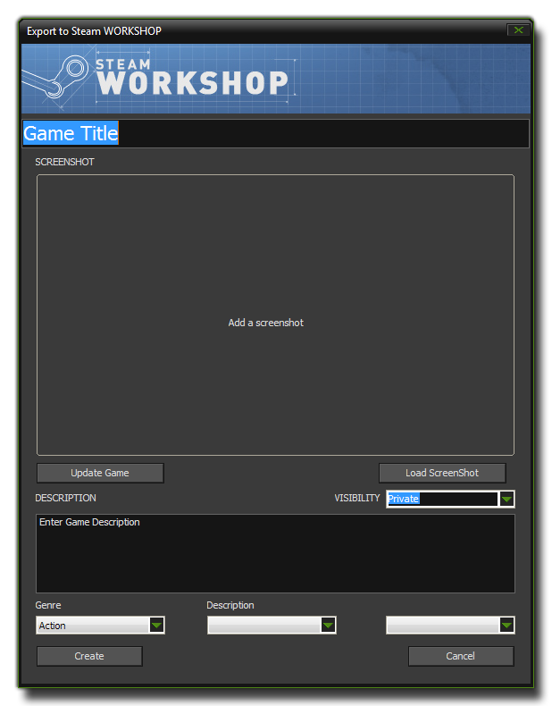

当你在 GameMaker: Studio 里运行你的游戏 (或 debug mode (调试模式))，这个模块会像标准的 windows 模块一样编译它，并且在 Windows 环境运行和测试。然而，当你决定使用文件菜单的 Create Executable 命令或者工具栏上相应的图标编译你的游戏时，会生成一个特殊的文件，将会直接上传到 Steam Workshop。
当你在 GameMaker: Studio 里运行你的游戏 (或 debug mode (调试模式))，这个模块会像标准的 windows 模块一样编译它，并且在 Windows 环境运行和测试。然而，当你决定使用文件菜单的 Create Executable 命令或者工具栏上相应的图标编译你的游戏时，会生成一个特殊的文件，将会直接上传到 Steam Workshop。如果你从 Steam 购买了 GameMaker: Studio 你将看到额外增加了 Steam Workshop 模块: 当你在 GameMaker: Studio 里运行你的游戏 (或 debug mode (调试模式))，这个模块会像标准的 windows 模块一样编译它，并且在 Windows 环境运行和测试。然而，当你决定使用文件菜单的 Create Executable 命令或者工具栏上相应的图标编译你的游戏时，会生成一个特殊的文件，将会直接上传到 Steam Workshop。
Steam Workshop 是一个基础用户平台，在那里你可以上传你的游戏或者玩别人的游戏，评估和评论他们。你可以上传正在制作或已经完成的游戏，但是他们并不能在创意工坊中售卖，只能免费提供给玩家。你要知道 Steam 考虑的是安全问题。你可以包含文件，不需要考虑你的游戏是在 Mac OS X、Ubuntu (Linux) 还是 Windows 上工作，Steam 为你做好了一切。
当你选择 Create Executable 按钮创建 Steam 创意工坊文件，将打开新的窗口，你必须确定细节以上传到 Steam 的网站，如下图:  在窗口顶部，你可以看到游戏名 (人们在 Steam 里将会看到的)，然后上传你的游戏截图。截图可能出现拉伸或扭曲，但在创意工坊页面看起来会是正常的，所以不必担心。然后你需要选择你的游戏的可见度(3选1):
- 私人的 - 只有你、Steam 管理员和制作游戏合作者才能看到。
- 只允许好友可见 - 你、Steam 管理员和你的好友可以看到。 然而，直接点击链接也可以访问。
- 公共的 - 游戏提供给 Steam 创意工坊，所有人都可以搜索到。
之后，可以为你的游戏添加一个描述。最后，在底部可以添加搜索标签 (最多三个，其中第一个必须是从下拉菜单选择的 "Genre(流派)"，其他两个用于描述的标签可随意填写 (其中也有一些预定义标签可供选择))。
当确定信息无误后，单击 Create 你的文件就会自动发送到 Steam 服务器。过几分钟 (取决于你的网速) 你可以在你的 Steam 账户页面访问该文件，还可以修改所有细节，包括可以添加更多的截图、改变可见性和编辑描述 (如果你打开了 Steam 客户端，你可以通过 Community (社区) > Workshop (创意工坊) > Your Workshop Files (你的创意工坊文件) 获取它们)。
一旦你已经上传了游戏，首先点击创意工坊里你的游戏的 Subscribe(订阅) 按钮就可以玩你的游戏了，它可以在 Steam 客户端的 社区部分右侧的 功能 菜单下找到。玩其他游戏只需要订阅其他游戏即可，所有订阅的游戏会显示在 Steam 播放器，会显示所有游戏的可用更新。
一旦你上传了游戏到创意工坊，如果想升级它或是改变截图、描述等... 可以很轻松地在 GameMaker: Studio 加载游戏并选择 Steam Workshop 编译目标并点击 Create Executable 按钮创建游戏。这个时候你应该按下 "Update Game (更新游戏)" 按钮，它会下载所有准备上传到创意工坊的游戏细节 (可能需要几分钟，取决于你的游戏数量)。下面的对话框会显示进度:  一旦所有游戏细节被下载，"Update Game" 按钮会显示你所有游戏的下拉列表。选择其中一个会显示以前上传的截图、描述和标签，你可以随意更改。完成之后点击 Create 按钮重新上传到创意工坊。
一旦所有游戏细节被下载，"Update Game" 按钮会显示你所有游戏的下拉列表。选择其中一个会显示以前上传的截图、描述和标签，你可以随意更改。完成之后点击 Create 按钮重新上传到创意工坊。
| Converted from CHM to HTML with chm2web Pro 2.85 (unicode) |